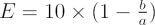
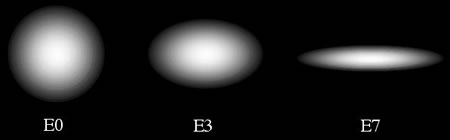

As the name would suggest, elliptical galaxies are galaxies that appear elliptical in shape. They are categorised by a single number derived from the equation:

where b and a are the projected lengths of the semi-minor and semi-major axes on the sky. In the Hubble classification, the roundest galaxies are labelled E0 and the flattest, E7.

Unlike spiral galaxies, elliptical galaxies are not supported by rotation. The orbits of the constituent stars are random and often very elongated, leading to a shape for the galaxy determined by the speed of the stars in each direction. Faster moving stars can travel further before they are turned back by gravity, resulting in the creation of the long axis of the elliptical galaxy in the direction these stars are moving.
The size of an elliptical galaxy is measured as an effective radius which corresponds to the size of a circle encompassing half of the light coming from the galaxy. Measurements reveal that elliptical galaxies come in a large range of sizes, from the rare giant ellipticals found in the centres of galaxy clusters and stretching over hundreds of kiloparsecs, to the very common dwarf ellipticals which may have diameters as small as 0.3 kiloparsecs.
Not surprisingly, the luminosities and masses of elliptical galaxies also range enormously. Giant ellipticals can be 1013 times as bright as the Sun and contain up to 1013 solar masses of stars. At the other extreme, dwarf ellipticals are faint (105 times as bright as the Sun) and contain as little as 107 solar masses of stars. In some cases, the density of stars in a dwarf elliptical can be so low that we can see straight through the galaxy!
The above comparisons encompass the different types of elliptical galaxy, however, it should be noted that astronomers are not sure if dwarf ellipticals, ellipticals and giant ellipticals form a continuous physical sequence. This is partially reflected in our theories of how the different galaxies formed.
Giant elliptical galaxies are generally thought to be the result of galaxy mergers. Ordinary elliptical galaxies may also form in this manner, or may have formed from the gravitational collapse of an interstellar gas cloud. In this case, a rapid burst of star formation would convert almost all the gas into stars simultaneously, leaving nothing to form a disk. Dwarf ellipticals may also form in this manner, but others have suggested that they form out of the leftover material of a larger galaxy or in the tidal tails of interacting galaxies.
Whatever the formation mechanism, all of the different types of elliptical galaxies contain significantly less dust and gas than spiral galaxies and irregular galaxies, and certainly not enough to support much star formation at present times. For this reason they are now observed to consist primarily of old, red, population II stars.